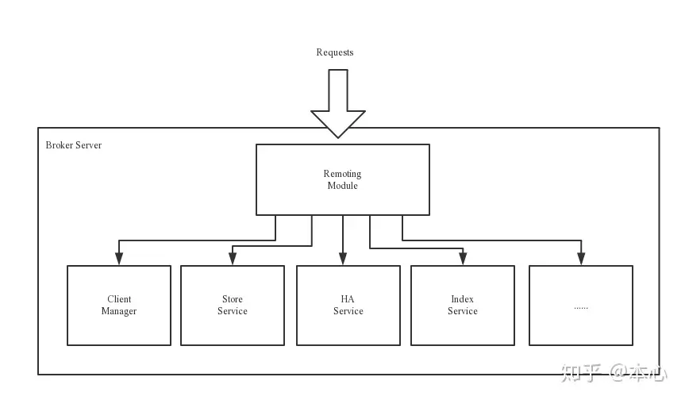

RocketMQ简介
RocketMQ主要由 Producer、Broker、Consumer 三部分组成，其中Producer 负责生产消息，Consumer 负责消费消息，Broker 负责存储消息。Broker 在实际部署过程中对应一台服务器，每个 Broker 可以存储多个Topic的消息，每个Topic的消息也可以分片存储于不同的 Broker。Message Queue 用于存储消息的物理地址，每个Topic中的消息地址存储于多个 Message Queue 中。ConsumerGroup 由多个Consumer 实例构成。
RocketMQ 网络部署特点

RocketMQ架构上主要分为四部分
NameServer：是一个几乎无状态节点，可集群部署，节点之间无任何信息同步。是一个非常简单的Topic路由注册中心，其角色类似Dubbo中的zookeeper，支持Broker的动态注册与发现。
主要包括两个功能：- Broker管理，NameServer接受Broker集群的注册信息并且保存下来作为路由信息的基本数据。然后提供心跳检测机制，检查Broker是否还存活；
- 路由信息管理，每个NameServer将保存关于Broker集群的整个路由信息和用于客户端查询的队列信息。然后Producer和Conumser通过NameServer就可以知道整个Broker集群的路由信息，从而进行消息的投递和消费。
NameServer通常也是集群的方式部署，各实例间相互不进行信息通讯。Broker是向每一台NameServer注册自己的路由信息，所以每一个NameServer实例上面都保存一份完整的路由信息。当某个NameServer因某种原因下线了，Broker仍然可以向其它NameServer同步其路由信息，Producer,Consumer仍然可以动态感知Broker的路由的信息。
Broker部署相对复杂，Broker分为Master与Slave，一个Master可以对应多个Slave，但是一个Slave只能对应一个Master，Master与Slave 的对应关系通过指定相同的BrokerName，不同的BrokerId 来定义，BrokerId为0表示Master，非0表示Slave。Master也可以部署多个。每个Broker与NameServer集群中的所有节点建立长连接，定时注册Topic信息到所有NameServer。
注意：当前RocketMQ版本在部署架构上支持一Master多Slave，但只有BrokerId=1的从服务器才会参与消息的读负载。
Producer与NameServer集群中的其中一个节点（随机选择）建立长连接，定期从NameServer获取Topic路由信息，并向提供Topic 服务的Master建立长连接，且定时向Master发送心跳。Producer完全无状态，可集群部署。
Consumer与NameServer集群中的其中一个节点（随机选择）建立长连接，定期从NameServer获取Topic路由信息，并向提供Topic服务的Master、Slave建立长连接，且定时向Master、Slave发送心跳。Consumer既可以从Master订阅消息，也可以从Slave订阅消息，消费者在向Master拉取消息时，Master服务器会根据拉取偏移量与最大偏移量的距离（判断是否读老消息，产生读I/O），以及从服务器是否可读等因素建议下一次是从Master还是Slave拉取。
结合部署架构图，描述集群工作流程
- 启动NameServer，NameServer起来后监听端口，等待Broker、Producer、Consumer连上来，相当于一个路由控制中心。
- Broker启动，跟所有的NameServer保持长连接，定时发送心跳包。心跳包中包含当前Broker信息(IP+端口等)以及存储所有Topic信息。注册成功后，NameServer集群中就有Topic跟Broker的映射关系。
- Producer发送消息，启动时先跟NameServer集群中的其中一台建立长连接，并从NameServer中获取当前发送的Topic存在哪些Broker上，轮询从队列列表中选择一个队列，然后与队列所在的Broker建立长连接从而向Broker发消息
- Consumer跟Producer类似，跟其中一台NameServer建立长连接，获取当前订阅Topic存在哪些Broker上，然后直接跟Broker建立连接通道，开始消费消息。
- 收发消息前，先创建Topic，创建Topic时需要指定该Topic要存储在哪些Broker上，也可以在发送消息时自动创建Topic。
Broker包含了以下几个重要子模块

- Remoting Module：整个Broker的实体，负责处理来自clients端的请求。
- Client Manager：负责管理客户端(Producer/Consumer)和维护Consumer的Topic订阅信息
- Store Service：提供方便简单的API接口处理消息存储到物理硬盘和查询功能。
- HA Service：高可用服务，提供Master Broker 和 Slave Broker之间的数据同步功能。
- Index Service：根据特定的Message key对投递到Broker的消息进行索引服务，以提供消息的快速查询。
集群部署
单Master模式
这种方式风险较大，一旦Broker重启或者宕机时，会导致整个服务不可用。不建议线上环境使用,可以用于本地测试。
启动 NameServer
1
2
3
### 首先启动Name Server
$ nohup sh mqnamesrv启动 Broker
1
2$ nohup sh bin/mqbroker -n localhost:9876
### 验证Name Server 是否启动成功，例如Broker的IP为：192.168.1.2，且名称为broker-a多Master模式
一个集群无Slave，全是Master，例如2个Master或者3个Master，这种模式的优缺点如下：
- 优点：配置简单，单个Master宕机或重启维护对应用无影响，在磁盘配置为RAID10时，即使机器宕机不可恢复情况下，由于RAID10磁盘非常可靠，消息也不会丢（异步刷盘丢失少量消息，同步刷盘一条不丢），性能最高；
- 缺点：单台机器宕机期间，这台机器上未被消费的消息在机器恢复之前不可订阅，消息实时性会受到影响。
- 启动NameServer
NameServer需要先于Broker启动，且如果在生产环境使用，为了保证高可用，建议一般规模的集群启动3个NameServer，各节点的启动命令相同，如下：
1 | ### 首先启动Name Server |
- 启动Broker集群
1 | ### 在机器A，启动第一个Master，例如NameServer的IP为：192.168.1.1 |
如上启动命令是在单个NameServer情况下使用的。对于多个NameServer的集群，Broker启动命令中-n后面的地址列表用分号隔开即可，例如 192.168.1.1:9876;192.161.2:9876。
多Master多Slave模式-异步复制
每个Master配置一个Slave，有多对Master-Slave，HA采用异步复制方式，主备有短暂消息延迟（毫秒级），这种模式的优缺点如下：
优点：即使磁盘损坏，消息丢失的非常少，且消息实时性不会受影响，同时Master宕机后，消费者仍然可以从Slave消费，而且此过程对应用透明，不需要人工干预，性能同多Master模式几乎一样；
缺点：Master宕机，磁盘损坏情况下会丢失少量消息。
- 启动NameServer
1
2
3
4
5
6### 首先启动Name Server
$ nohup sh mqnamesrv &
### 验证Name Server 是否启动成功
$ tail -f ~/logs/rocketmqlogs/namesrv.log
The Name Server boot success... - 启动Broker集群
1 | ### 在机器A，启动第一个Master，例如NameServer的IP为：192.168.1.1 |
多Master多Slave模式-同步双写
每个Master配置一个Slave，有多对Master-Slave，HA采用同步双写方式，即只有主备都写成功，才向应用返回成功，这种模式的优缺点如下：
优点：数据与服务都无单点故障，Master宕机情况下，消息无延迟，服务可用性与数据可用性都非常高；
缺点：性能比异步复制模式略低（大约低10%左右），发送单个消息的RT会略高，且目前版本在主节点宕机后，备机不能自动切换为主机。
- 启动NameServer
1 | ### 首先启动Name Server |
- 启动Broker集群
1
2
3
4
5
6
7
8
9
10
11### 在机器A，启动第一个Master，例如NameServer的IP为：192.168.1.1
$ nohup sh mqbroker -n 192.168.1.1:9876 -c $ROCKETMQ_HOME/conf/2m-2s-sync/broker-a.properties &
### 在机器B，启动第二个Master，例如NameServer的IP为：192.168.1.1
$ nohup sh mqbroker -n 192.168.1.1:9876 -c $ROCKETMQ_HOME/conf/2m-2s-sync/broker-b.properties &
### 在机器C，启动第一个Slave，例如NameServer的IP为：192.168.1.1
$ nohup sh mqbroker -n 192.168.1.1:9876 -c $ROCKETMQ_HOME/conf/2m-2s-sync/broker-a-s.properties &
### 在机器D，启动第二个Slave，例如NameServer的IP为：192.168.1.1
$ nohup sh mqbroker -n 192.168.1.1:9876 -c $ROCKETMQ_HOME/conf/2m-2s-sync/broker-b-s.properties &
以上Broker与Slave配对是通过指定相同的BrokerName参数来配对，Master的BrokerId必须是0，Slave的BrokerId必须是大于0的数。另外一个Master下面可以挂载多个Slave，同一Master下的多个Slave通过指定不同的BrokerId来区分。$ROCKETMQ_HOME指的RocketMQ安装目录，需要用户自己设置此环境变量。
集群监控平台搭建
RocketMQ有一个对其扩展的开源项目incubator-rocketmq-externals，这个项目中有一个子模块叫rocketmq-console，这个便是管理控制台项目了，先将incubator-rocketmq-externals拉到本地，因为我们需要自己对rocketmq-console进行编译打包运行。
下载并编译打包
1 | git clone https://github.com/apache/rocketmq-dashboard.git |
进入到解压的文件夹下修改 application.yml 文件
执行 mvn clean package -DskipTests=true
启动 rocketmq-dashboard：
java -jar rocketmq-dashboard-1.0.1-SNAPSHOT.jar
启动成功后，我们就可以通过浏览器访问http://localhost:8080进入控制台界面了，如下图：

示例
在基本样例中我们提供如下的功能场景：
- 使用RocketMQ发送三种类型的消息：同步消息、异步消息和单向消息。其中前两种消息是可靠的，因为会有发送是否成功的应答。
- 使用RocketMQ来消费接收到的消息。
加入依赖
1 | <dependency> |
消息发送
Producer端发送同步消息 这种可靠性同步地发送方式使用的比较广泛，比如：重要的消息通知，短信通知。
1 | public class SyncProducer { |
发送异步消息 异步消息通常用在对响应时间敏感的业务场景，即发送端不能容忍长时间地等待Broker的响应。
1 | public class AsyncProducer { |
单向发送消息 这种方式主要用在不特别关心发送结果的场景，例如日志发送。
1 | public class OnewayProducer { |
发送延时消息
1 | public class ScheduledMessageProducer { |
批量发送消息能显著提高传递小消息的性能。限制是这些批量消息应该有相同的topic，相同的waitStoreMsgOK，而且不能是延时消息。此外，这一批消息的总大小不应超过4MB。
1 | String topic = "BatchTest"; |
你可能不确定它是否超过了大小限制（4MB）。这时候你最好把你的消息列表分割一下：
1 | public class ListSplitter implements Iterator<List<Message>> { |
消费消息
1 | public class Consumer { |